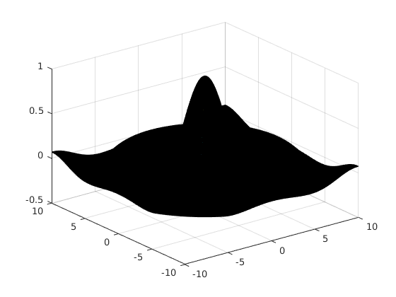
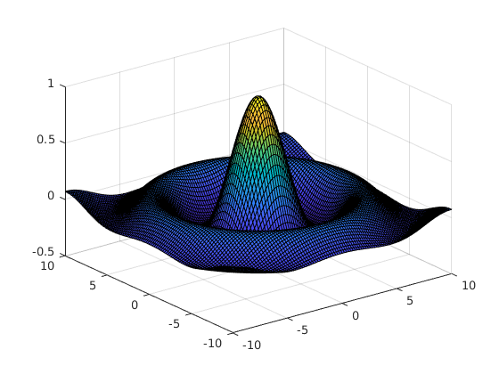

En esta sesión de laboratorio se ha utilizado la herramienta MATLAB para realizar una serie de ejercicios de los temas vistos en la asignatura. En concreto, se han abordado los temas referentes a Gráficas 3D y Cálculo multivariable. Así pues, explicaremos estos ejercicios a continuación y realizaremos los ejercicios que se requerían utilizando la aplicación que nos ocupa.
En el primer ejercicio abordó el tema de las gráficas en tres dimensiones. En primer lugar, el comando [x,y] = meshgrid(-4:0.2:4,-4:0.2:4) se utiliza para generar la malla que sirve de dominio a z. Se genera así un dominio con $x \in [-4,4]$ e $y \in [-4,4]$ y paso $0.2$. Con la x y la y definidas, definimos la función utilizando la notación z=x.^2+y.^2. Nótese el punto detrás de cada variable, pues MATLAB ha definido $x$ e $y$ como matrices y dicho punto implica la extensión de la operación a todos los puntos de la matriz. Si no se incluyera este punto, obtendríamos un error.
Una vez definidas la malla y la función, podemos realizar la gráfica 3D de la función haciendo uso del comando surf(x,y,z). Podemos añadir un cuarto argumento que indique el color; sin embargo, dejaremos que la aplicación lo ponga automáticamente. La salida de este comando nos da una gráfica con la que podemos interactuar. La vemos a continuación:
 Podemos, pues, ver un paraboloide con la ecuación $f(x,y) = x^2 + y^2$.
Podemos, pues, ver un paraboloide con la ecuación $f(x,y) = x^2 + y^2$.
Por otro lado, el comando surfc(x,y,z) hace lo mismo que el anterior, pero añadiendo las curvas de nivel al gráfico saliente:
Para realizar las curvas de nivel únicamente podemos utilizar dos comandos:
contour3(z,6) representará las curvas de nivel en tres dimensiones. El segundo parámetro especifica el número de curvas que se han de representar.contour(z,15) hace lo mismo que el comando anterior, pero dando lugar a una gráfica en dos dimensiones.A continuación aparecen las gráficas de contour3 y contour respectivamente.


La función que hemos representado hasta ahora es siempre continua, por lo que la aplicación no tiene problemas para representarla. Sin embargo, hay funciones con problemas de representación. Intentemos representar la función $f(x,y) = \frac{\sin{x^2 + y^2}}{x^2 + y^2}$. Procedemos según hemos explicado arriba y obtenemos el siguiente gráfico:

Parece que en el punto $(x,y) = (0,0)$ la función no está definida y la aplicación no ha hecho gráfica ahí. Si rotamos la vista, lo vemos de forma más clara:

El punto blanco implica que la función no está definida en $(x,y) = (0,0)$.
Hemos visto, múltiples funcionalidades en este ejercicio. Sin embargo, hemos de tener en cuenta que al crear la rejilla para representar funciones, los parámetros de dominio y de paso de las variables han de ser relativamente fáciles de representar, pues si pedimos demasiados puntos, los colores dejarán de verse y el rendimiento gráfico de la aplicación disminuirá considerablemente. Veámoslo con un ejemplo:
Si eliminamos puntos, dando el paso más largo obtenemos una gráfica mejor y una mejora considerable del rendimiento.

El segundo ejercicio de la sesión abordó el tema de los límites y las derivadas parciales con ayuda de la Symbolic Toolbox de MATLAB. Para empezar, se definen las variables x e y como simbólicas haciendo uso del comando syms x y. Así, se define la función $f(x,y)=\frac{x^2-y^2}{2x^2+y^2}$ y se obtienen sus límites cuando $(x,y) \to (0,0)$:
Para realizar esos límites hemos utilizado los comandos limit(limit(f(x,y),x,0),y,0) y limit(limit(f(x,y),y,0),x,0). Como son diferentes, el límite no existe. Lo mismo ocurre con la función $g(x,y)=\frac{x^2+y^2}{2x^2+y^2}$, comprobada también con esos comandos.
Sin embargo, si comprobamos qué ocurre con la función $h(x,y)=\frac{x^2-y^2}{x+y}$ y realizamos sus límites análogamente obtenemos que los dos límites valen $0$, por lo que el límite, si existe, tiene ese valor.
Otra opción necesaria es la petición de límites direccionales. Para ello, declaramos una nueva variable simbólica $m$ con syms m. Si los límites dependen de $m$, entonces los límites direccionales serán diferentes y el límite no existirá.
Al probar a hacer límites direccionales con $f(x,y)$ acercándonos por las rectas de ecuación $y = m \cdot x$, obtenemos un valor del límite dependiente de $m$, por lo que concluimos que el límite no existe al no coincidir los límites direccionales.
Si trabajamos ahora con la función $i(x,y) = \frac{y}{x^2 + y}$ y probamos a acercarnos por el haz de rectas $y = m \cdot x$, obtenemos un valor de $1$ (independiente de $m$). Sin embargo, si seguimos probando con un haz de parábolas ($y = m \cdot x^2$), el límite obtiene un valor de $\frac{m}{m+1}$ que sí depende de $m$, por lo que los límites diferirán y el límite general no existirá.
En lo que se refiere a las derivadas parciales, se calculan con el comando diff(f,x). Definimos pues, una nueva función $f$ y hacemos, con dicho comando, la derivada parcial de $f$ respecto de $x$, es decir, $\frac{\partial f}{\partial x}$. Si definimos $f(x,y) = y \cdot x^2 + \cos{\left(x \cdot y^2\right)}$, $\frac{\partial f}{\partial x} = 2xy - y^2 \sin{\left(xy^2\right)}$.
Podemos utilizar este comando para derivar parcialmente respecto de otras variables y anidarlo para hacer derivadas parciales mixtas. Para hacer las derivadas parciales respecto de la misma variable utilizamos el comando diff(f,x,2), que realizaría $\frac{\partial^2 f}{\partial x^2}$.
El tercer ejercicio del laboratorio ha puesto el foco en las matrices Jacobiana y Hessiana. Comenzamos definiendo dos funciones $f$ y $g$ de forma numérica en MATLAB, mediante la orden f=@(x)[x(1)*x(2);1-x(1)^2;sin(x(2))]. Nótese la utilización del símbolo @ justo después del signo de igual. Además las definimos de forma simbólica como veníamos haciendo (mediante el comando syms).
Ahora preparamos el jacobiano de la función $f$ (llamada f_s en nuestro script) de dos maneras diferentes:
[diff(f_s,x1) diff(f_s,x2)], que coloca el dos columnas las derivadas parciales de $f$jacobian(f_s).Como era de esperar, obtenemos la misma solución en los dos casos:
Por lo que respecta a la matriz Hessiana, definimos las dos variables simbólicas con syms x y y la función $h(x,y) = x^3 + y^2 \cdot \cos{(x)}\sin{(y)} + \frac{7x^3}{\sin{x}}$. Después, calculamos sus derivadas parciales primeras y las segundas, puras y mixtas con el proceso utilizado para el jacobiano. Obtenemos el mismo resultado haciendo la matriz manualmente o con el comando hessian(h).
Por último, remarcamos la utilización de la regla de la cadena para obtener jacobianas de funciones compuestas. Definimos $z = f(g(y))$ y sacamos su jacobiano con jacobian(z). Obtenemos el mismo valor que utilizando la regla de la cadena (multiplicando los jacobianos de $f$ y $g$ y sustituyendo las variables por los valores de $g$).
Los ejercicios adicionales se pueden descargar en el campus virtual o a través de los siguientes enlaces directos: